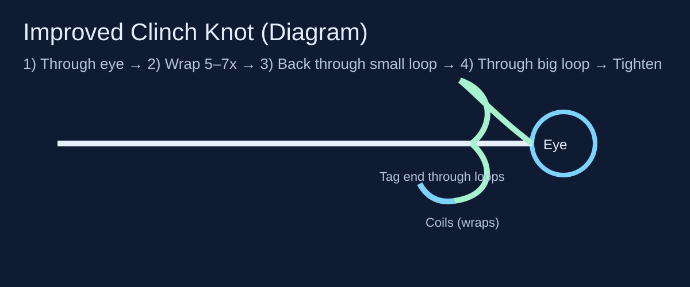

1) Improved Clinch Knot
A classic for attaching hooks and small lures to mono/fluoro.

- Pass the line through the hook eye and pull 6–8 inches of tag end.
- Wrap tag end around the standing line 5–7 times (more wraps for thinner line).
- Feed the tag end through the small loop near the hook eye.
- Then feed the tag end through the larger loop you just created.
- Wet the knot, tighten slowly by pulling the standing line, then trim the tag.
When to use: Mono/fluoro for hooks and smaller lures.
Common mistakes: Tightening dry, wraps crossing over each other, too few wraps.
Pro tip: If the coils look messy, cut it and retie—messy coils often mean weaker knots.